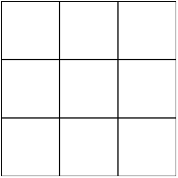
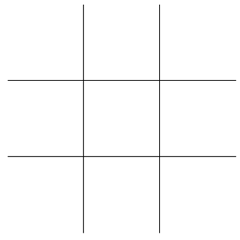

This activity will review DOM manipulation with Javascript and events.
(Chapters 6-7
from Javascript: Novice to Ninja). We will do this by building an
HTML/CSS/JS based Tic-Tac-Toe board.
Instructions
Complete the following assignment as a team. Designate one team member
as the "main driver" and collaborate on their copy of the code.
Everyone on the team should be actively engaged in writing the code
and contributing to the solution. Once the solution is working, make
sure that everyone on the team gets a copy of the code. Each week let
someone else be the "main driver" of the coding.
Core Requirements
Build a 3X3 board in HTML and CSS.
You could do this with either a table element, or a collection
of divs. Both have their advantages and disadvantages.
Attach a touchend listener to the board.
When a cell is touched it should add either an 'X or an 'O',
depending on whether it is player 1 or player 2's turn.
Add a reset button.
When touched the reset button should remove all of the marks
from the board.
Stretch Goals
If your board looks like the first image below, make it look
like the second.


Hint: look into :nth-child(n),
:last-child, etc for help to target specific cells
to turn borders on or off.
Add Game logic
Right now the players have to decide who won, or whether it was
a tie. Add some game logic to figure out when the game should
result in a tie.
Add More Game logic
Add the logic to figure out when someone wins.
Instructors Solution
As a part of this team activity, you are expected to look over a
solution from the instructor, to compare your approach to that one.
One of the questions on the I-Learn submission will ask you to provide
insights from this comparison.
Please DO NOT open the solution until you have worked through this
activity as a team for the one hour period. At the end of the hour, if
you are still struggling with some of the core requirements, you are
welcome to view the instructor's solution and use it to help you
complete your own code. Even if you use the instructor's code to help
you, you are welcome to report that you finished the core
requirements, if you code them up yourself.
When you have finished this activity, please fill out the assessment
in I-Learn. You are welcome to complete any additional parts of this
activity by yourself or with others after your meeting before
submitting the assessment.